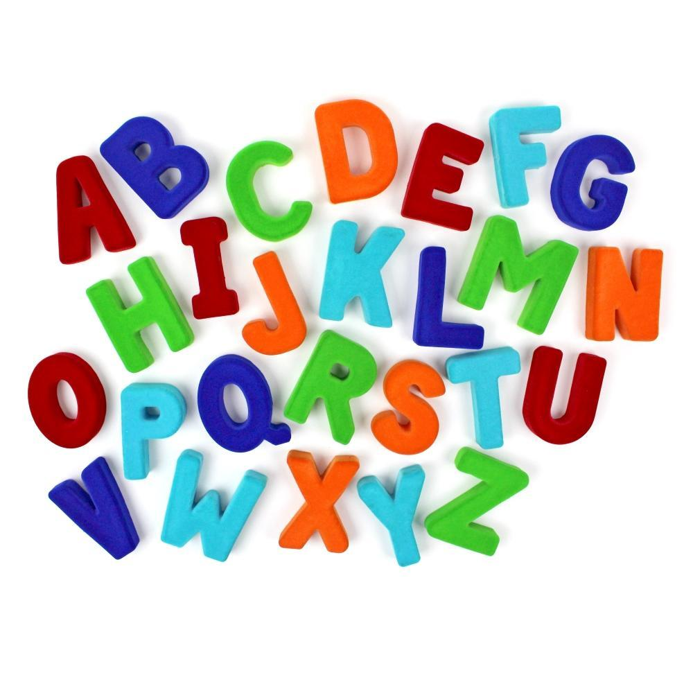
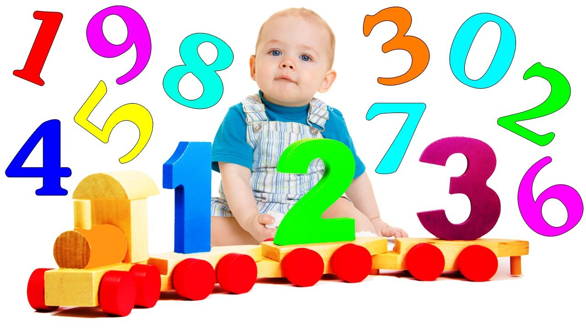
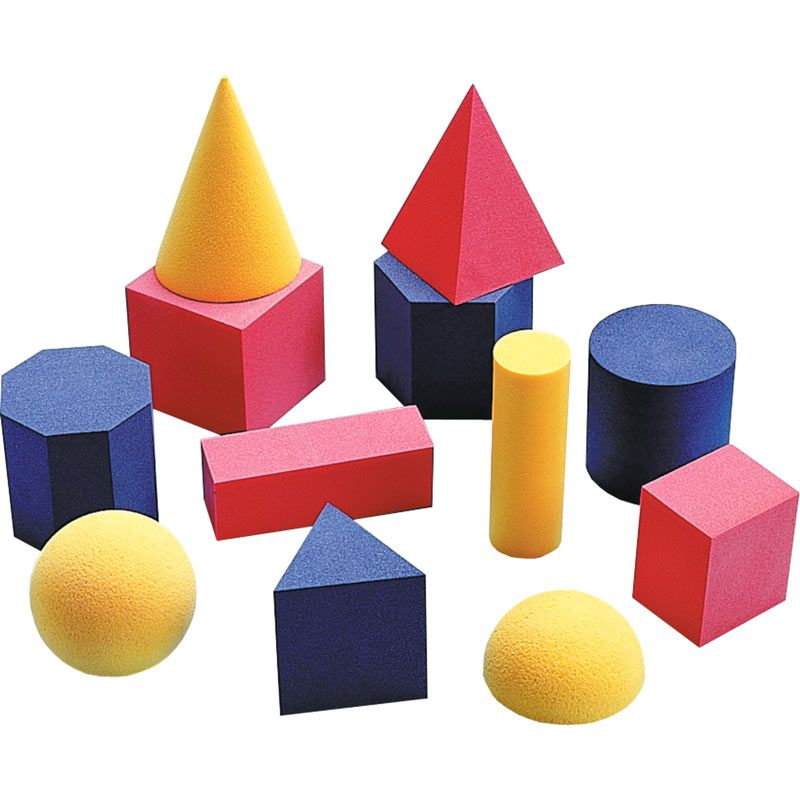
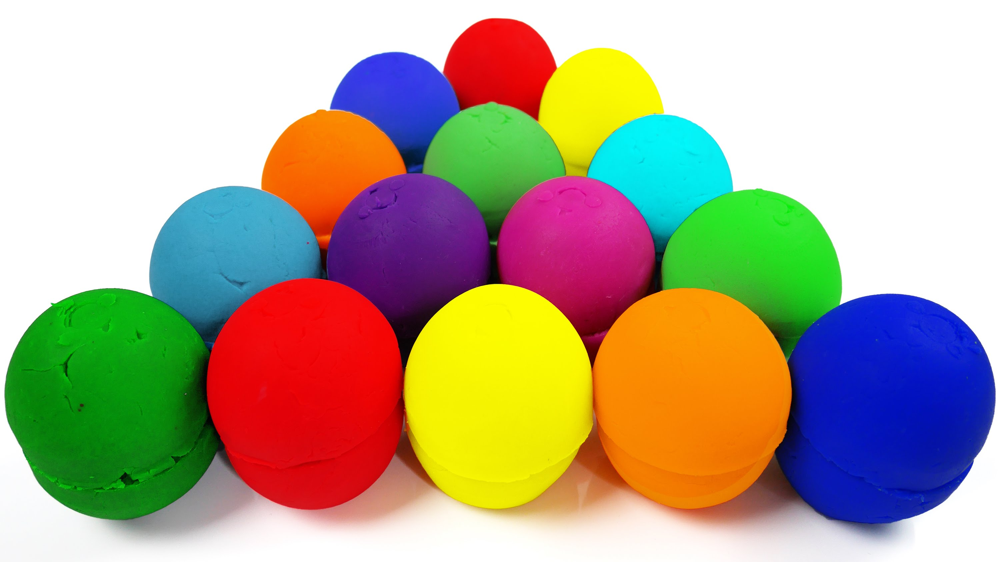

When to teach what: A Guide for Colors, Shapes,Letters and more...
Introducing toddlers and preschoolers to ABCs and 123s is a great idea as they are little sponges for knowledge at this young. At this age play and exploration is THE most important part of their activities. As a preschooler, I don’t really think a lot is expected for them to know. Some basics are good though, like colors, shapes, numbers and letters. To refresh your preschooler’s memory of letter recognition in general, as well as knowing the uppercase and lowercase alphabet and getting to know some of the letters sounds, these ideas would be beneficial.
Letters
I remember being so worried when Little Bear was 2 ½ that he didn’t know his letters yet. I tried teaching him letters in lots of different ways and honestly, he just did not understand the concept of letters. Well, I finally decided to give up for awhile and not pressure him. A few months before he turned 3, he suddenly got it and learned all of his uppercase letters in about two weeks. The point is, 3 is a good age to teach letters, but do NOT stress and pressure your child to learn them. Do lots of fun things to teach and expose him to letters, but don’t worry about it. Your child should know his letters by kindergarten, but there should be no pressure before that. This post on sensory activities that help kids start writing letters is a great place to start. Check out all of my letters posts here.
Numbers
3 years is a pretty good age to teach numbers. I generally like to introduce letters first and then introduce numbers a little later. I think this helps your child understand that numbers are different from letters. I recommend 3 as a great age to start teaching numbers, but just like letters, there is no pressure to learn them all fast. Your child should be able to count up to 20 and identify numbers 1-10 before kindergarten. If you do lots of fun activities involving numbers, they should easily be able to do both of those things by kindergarten. Check out awesome Number Activities for Preschoolers.
Shapes
2 years old is a great age for teaching shapes. Start by identifying the shapes you see in the world around you. Your child should have a basic understanding of shapes by 2 ½ years old and should be able to identify many shapes by the time he is 3. Start by teaching the basic shapes (square, circle, rectangle, triangle), then continue to more advanced shapes (oval, star, heart, diamond). Check out this post.
Colors
18 months is the generally accepted age for teaching colors. Some kids learn their colors sooner and some learn them later. 18 months – 2 ½ is a great age for specifically teaching colors. You should always be reviewing colors with your child though, all the way up to kindergarten. Also, be sure to use the color words both before and after the noun (this is a blue pen, this pen is blue). It is important to use the color word both ways so your child can better understand the concept of color. If you are looking for ways to teach colors, check out this post.
Sample Activity Chart For Toddlers and Preschoolers
| Sunday | Monday | Tuesday | Wednesday | Thursday | Friday | Saturday |
|---|---|---|---|---|---|---|
| Family Time | ||||||
| Finger-Paint, Play hide and seek | Sandbox | Outdoor play | Puzzles | Reading board books | Sink Vs Float | |
| Collect green things | Draw with chalks | Obstacle course | Libary day, Dance to music | Painting | Dust with mommy, smell herbs in the garden | |
| Play with blocks,Recycle and paint | Gardening with ABC's, Swimming | Stack mixing bowls | Story time at library | Pom Poms in wipes containers | clean with mommy, Sandbox | |
| Reading board books and Swimming | Lacing Board | Blow bubbles | Story time at library, Bang on pots and pans | Play with homemade dough | Dance, Finger-Paint | |
| Rainbow gelatin, Sandbox | Swimming, bathtub paint | Puzzles | Play on Piano | Read a board book | Painting |